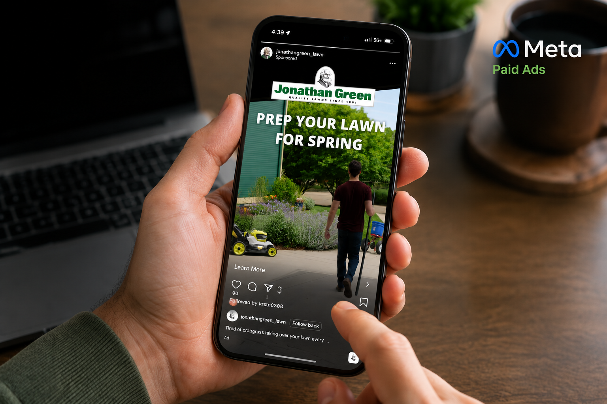

I scale paid media budgets without losing efficiency.
How I built and ran paid media across Meta, Hulu, Google Ads, and Amazon — producing the brand's entire video library in house to fuel it.

Scale spend without letting efficiency slip.
Separate from the brand-building work below, this is the performance side of the job: scaling a $200K annual budget across a $50M business's paid channels — tying spend to real acquisition and offline revenue, and holding every channel and agency to the same bar.
A challenger budget against a category giant.
Jonathan Green needed to grow direct-to-consumer revenue while competing against category giant Scotts. Paid media was the growth lever, but the brand had no video creative to run on it.
A full-funnel channel mix, built from scratch.
Meta
Ran paid social with original video creative, restructuring it around before/after proof to lift CTR 54% YoY.
Hulu / Streaming
Built top-of-funnel reach paid social couldn't touch, feeding demand to the lower-funnel channels below.
Google Ads
Captured high-intent search demand at 4x ROAS, plus geofencing that tied digital spend to 1,481 in-store visits.
Amazon Ads
Scaled monthly spend 10x to $25K+ while improving efficiency, hitting a 16.9x peak ROAS at 8.7% blended ACoS.
Video Production
Produced the in-house creative pipeline that made the Meta CTR lift and Amazon efficiency gains possible.
Why I own creative, not just media buying.
Agencies buy media against whatever creative they're handed. I produce the creative myself, so I can test and rebuild it fast when the numbers say to. It's how the Meta CTR lift and Amazon efficiency gains happened.
Owning creative end to end is what let me test my way to a 54% CTR lift.
Original creative, running across every channel.
See the full library on vimeo.com/jonathangreenlawns ↗
A performance marketer's record: spend scaled 10x with efficiency that improved the whole way, new-customer acquisition proven at scale, and digital spend tied to real offline revenue.
From one channel to an accountable omnichannel program.
Every row here is a number, not an adjective — proof the channel expansion actually performed.
Before
After
Paid media that competed with a category giant, and won share.
Jonathan Green needed to grow direct-to-consumer revenue while competing against category leader Scotts, on a fraction of the budget. I built the full-funnel paid media program across Meta, Hulu, Google Ads, and Amazon, and produced the brand's entire video library in house to fuel it — growing DTC revenue from $10K to $2.5M.
Separately, as the brand matured into a $50M business, I owned a $200K annual paid media budget across those same four channels, scaling Amazon Ads spend 10x to $2.1M in lifetime ad-attributed sales at a 16.9x peak ROAS — without losing efficiency.
The through-line across both: I scale spend without letting efficiency slip, tie that spend to real new-customer acquisition and offline revenue, and hold every channel and agency to the same bar.
I don't just run paid media — I scale it responsibly, and prove it with the numbers that matter.